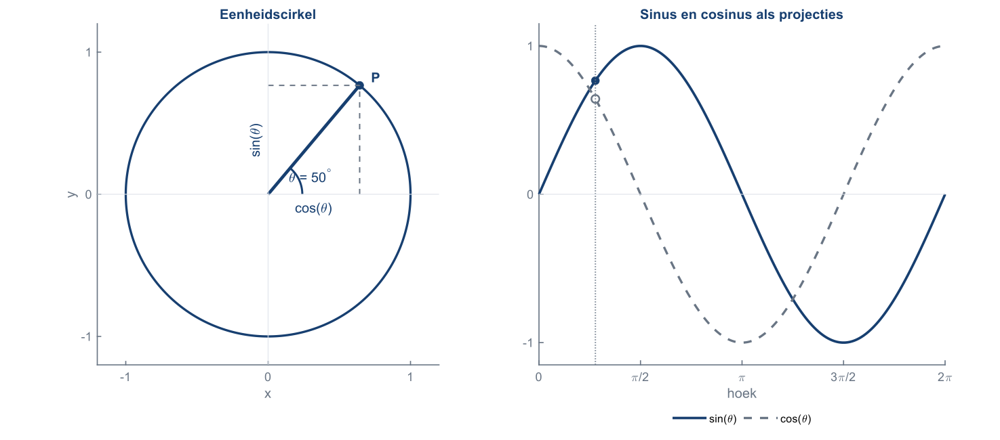
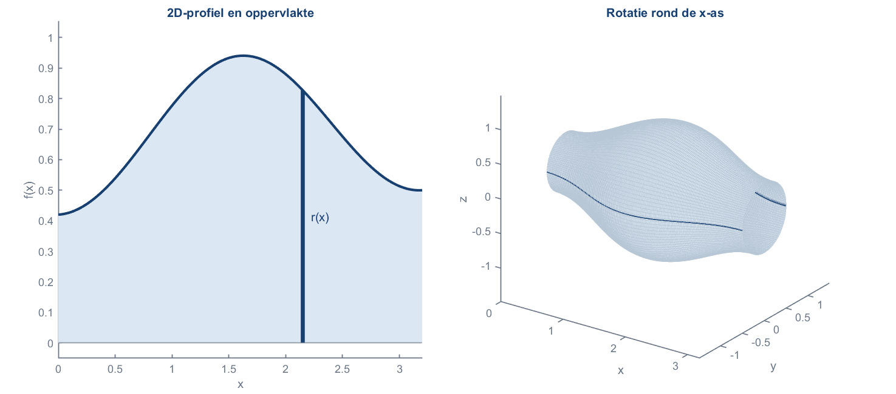
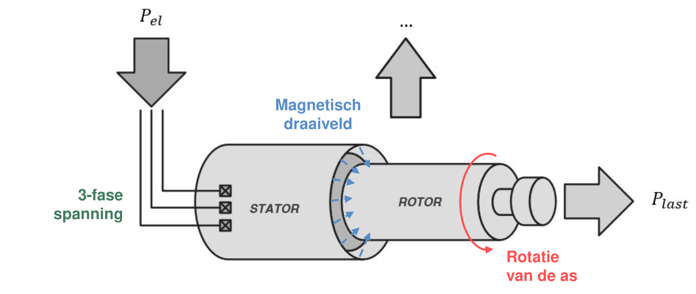
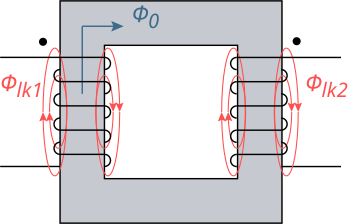
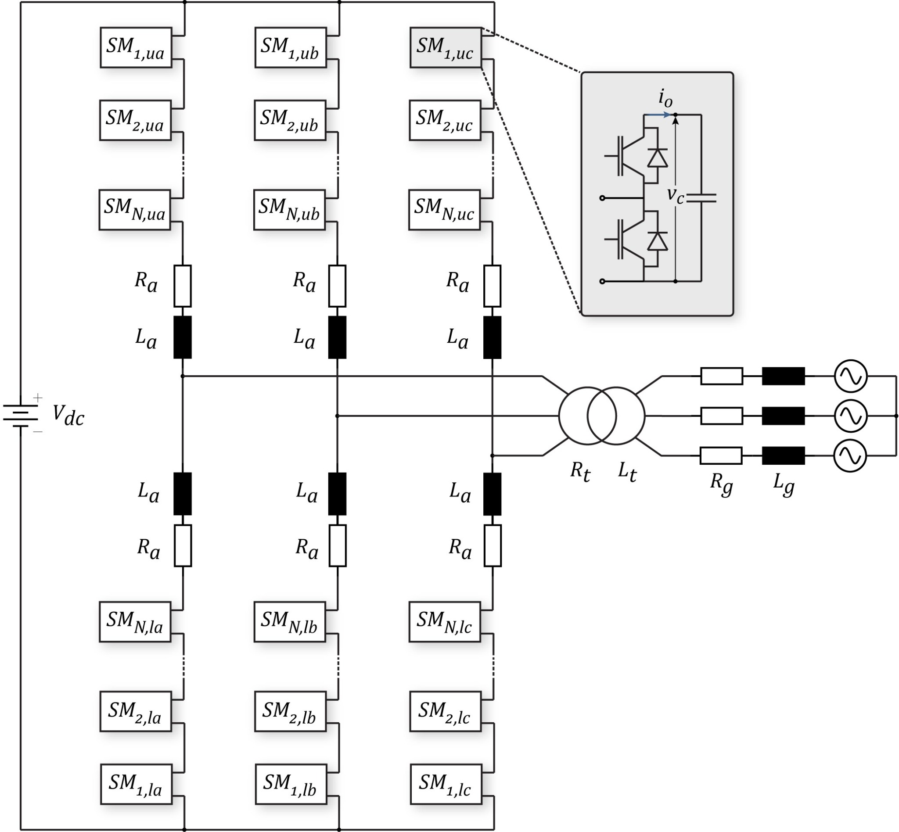

Wiskunde
Van basisvaardigheden tot universitaire analyse.
- Algebra, vergelijkingen en functies
- Meetkunde en goniometrie
- Afgeleiden, integralen en reeksen
- Vectoren en lineaire algebra
- Differentiaalvergelijkingen en numerieke methoden
PERSOONLIJKE BIJLES · HASSELT & ONLINE
Hallo! Ik ben Cedric. Ik geef persoonlijke bijles aan leerlingen en studenten, van de eerste jaren middelbaar tot universiteit. We bouwen niet alleen naar het juiste antwoord toe: ik wil dat je ziet waarom een concept werkt en hoe alles samenhangt.

OVER MIJ
Mijn doel is niet dat je een trucje onthoudt, maar dat het concept logisch begint te voelen.
Ik ben Cedric Keibeck, ingenieur en doctoraatsonderzoeker met een sterke achtergrond in wiskunde, fysica, elektrotechniek, energiesystemen, vermogenselektronica en batterijtechnologie. Mijn academische werk draait dagelijks rond modellering, analyse en het inzichtelijk maken van complexe technische systemen.
Diezelfde manier van denken gebruik ik in bijlessen. Een formule is voor mij nooit alleen iets om uit het hoofd te leren: we koppelen ze aan een grafiek, een geometrische interpretatie, een elektrisch schema of een fysisch verschijnsel. Wanneer een idee moeilijk te visualiseren is, maak ik indien nuttig zelf een figuur of simulatie in MATLAB of Adobe Illustrator.
Daardoor kan ik begeleiding geven over een brede leerlijn: van basisalgebra en de eerste lessen fysica in het middelbaar tot analyse, differentiaalvergelijkingen, elektromagnetisme, circuitanalyse en ingenieursvakken aan de universiteit.
BEGELEIDING
We vertrekken altijd van jouw cursus, voorkennis en doel. De voorbeelden hieronder zijn dus bewust niet beperkend.
Van basisvaardigheden tot universitaire analyse.
De fysische betekenis eerst, de formule daarna.
Van de eerste schakeling tot ingenieursvakken.
Programmeren als gereedschap om een probleem te begrijpen.
VISUALISATIES
Ik gebruik MATLAB en Adobe Illustrator wanneer een figuur sneller inzicht geeft dan nog een blad formules. Sleep, swipe of klik op een kaart om door de voorbeelden te bladeren.

De eenheidscirkel wordt gekoppeld aan sinus, cosinus en hun projecties. Zo zie je waarom de relaties werken in plaats van ze alleen te memoriseren.

Een 2D-profiel en het bijbehorende 3D-lichaam staan naast elkaar. Dat maakt de geometrische betekenis van de integraal zichtbaar.

Magnetische velden, draaiveld, koppel en energiestromen kunnen in één overzicht gekoppeld worden aan de fysica achter de machine.

Wikkelzin, fluxrichting en magnetische koppeling worden ruimtelijk zichtbaar, zodat tekenconventies en inductiewetten logisch samenkomen.

Door stroompaden, spanningen en vermogensstromen rechtstreeks op een schema zichtbaar te maken, worden zowel eenvoudige als uitgebreidere schakelingen intuïtiever.
AANPAK
De les volgt geen vast script. Wel gebruik ik een vaste denklijn om snel te vinden waar de moeilijkheid zit.
Je stuurt het vak, je jaar en indien mogelijk de leerstof of oefeningen waarmee je moeite hebt.
We zoeken waar het precies misloopt: voorkennis, begrip, rekenvaardigheid of examenstrategie.
Ik bouw het concept opnieuw op, stap voor stap. Waar nuttig gebruik ik een schema, grafiek of visualisatie.
We lossen gerichte oefeningen op en verschuiven geleidelijk van samen werken naar zelfstandig redeneren.
Je weet welke ideeën je nog moet herhalen én hoe je dat het best aanpakt.
ERVARINGEN
Een selectie van recensies uit eerdere bijlesbegeleiding. Sleep, swipe of klik om een andere recensie naar voren te halen.
Namen en identificerende details zijn aangepast of weggelaten om de privacy van leerlingen en studenten te beschermen.
Nog geen recensies toegevoegd.
TARIEVEN
De eerste kennismaking is gratis. We bespreken kort je vak, niveau, leerdoel en de manier waarop ik je het best kan helpen.
Geen registratie- of administratiekosten.VRAGEN
Van de eerste jaren middelbaar tot universitaire vakken. De aanpak en diepgang worden volledig aangepast aan het niveau van de leerling of student.
Ja. Online lessen kunnen via een videoplatform met schermdeling en een digitaal bord. MATLAB, schema's en visualisaties kunnen daarbij rechtstreeks gedeeld worden.
Nee. Alleen wanneer een visualisatie echt helpt. Soms is een eenvoudige schets of een paar goed gekozen oefeningen veel efficiënter.
Zeker. Bijles kan eenmalig of terugkerend zijn. Stuur vooraf zo veel mogelijk cursusmateriaal door zodat we de beschikbare tijd gericht kunnen gebruiken.
CONTACT
Stuur me het vak, je jaar en waar het moeilijk loopt. Dan bekijken we samen of en hoe ik je kan helpen.